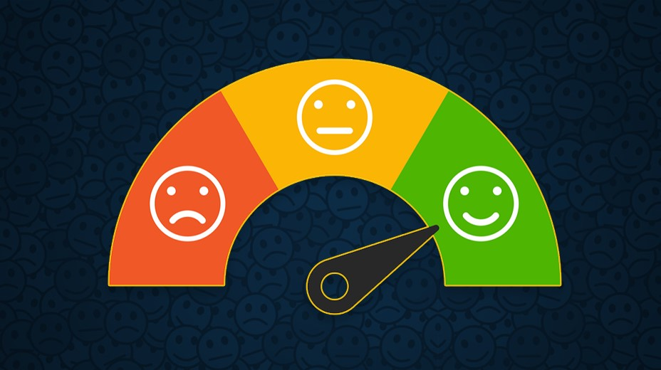

Análise de Sentimentos
Análise de sentimentos com processamento de linguagem natural
para captar a satisfação dos clientes com base em suas avaliações. Relatório e deploy
do projeto através de app com interface intuitiva.
Ferramentas: Python (Pandas | nltk | WordCloud | Scikit-Learn | Streamlit)
Previsão de Churn
Projeto de previsão de churn de clientes com base em seu perfil, informações contratuais
e financeiras, através de algoritmos de machine learning. Deploy do modelo através de app com
interface intuitiva.
Ferramentas: Python (Pandas | Numpy | Scikit-Learn | Streamlit)
Detecção de Fraudes em Transações Bancárias
Projeto de detecção de fraudes em transações financeiras para entender e previnir
operações fraudulentas, com deploy do modelo que permite ao usuário final checar se
uma operação pode ou não ser legítima.
Python (Pandas | Numpy | Scikit-Learn | Streamlit)